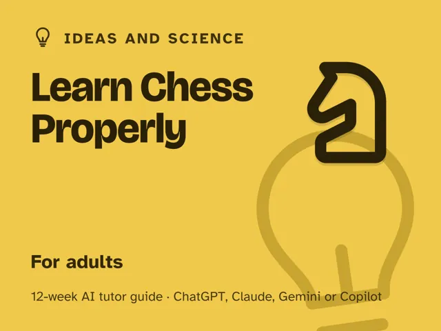
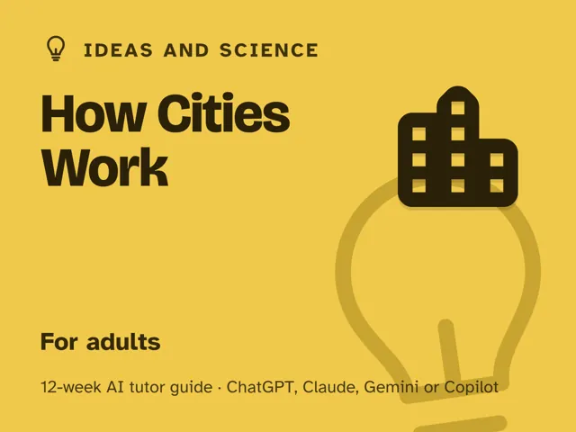

How Cities Work
$29Instant download: a PDF to read, a browser copy, and the AI-tutor file you hand straight to any AI assistant.Buy it on Etsy →
Take the free placement check first: 15 minutes, and it names the week to start at.
A masterclass you actually finish. Most people walk past the machinery that runs a city every day (the zoning line that flips a street's character, the pipe under the curb, the bus route that quietly fails) without ever seeing it. This 12-week plan turns an AI tutor into an urbanist walking beside you: it sends you outside to look before it explains, then asks questions until the pattern clicks. You'll learn the city as one interacting system (transport, zoning, infrastructure, housing, and public space), so you can read any block in any city, not just recite ten facts about your own. No planning background assumed; just a block to stand on and one scripted ~60-minute session a week: you lead it, the guide times every step and writes it out for you.
What you get
- 12 deep weekly sessions, each ~60 minutes and fully scripted: a plain-language concept, a concrete worked example, a minute-by-minute session plan with the AI-tutor prompts built in, a "show me" checkpoint, common mistakes to watch for, and practice.
- A "Never used an AI chat assistant? Start here" onboarding that takes a complete beginner from zero to ready in about five minutes, using a free AI assistant (no paid plan needed).
- Four rescue prompts in the front matter for when it all looks like noise, the AI starts handing you answers instead of making you look, a week feels too easy, or you want to test whether you really understand.
- Observe-first coaching built into every session plan: the tutor asks what you saw, and usually has you predict, before it explains, and the rescue prompts push you past single-cause explanations to the interaction between systems.
- A full neighborhood systems report you plan and build in the two project weeks, reading transport, zoning, infrastructure, housing, and public space together in a neighborhood you chose yourself.
- Works wherever you live: the guide is written in US English, and every session tells the AI to use your country or region for spelling, units, money, and local examples. Safety notes cover street fieldwork and looking (never touching) at meters, panels, and utility equipment.
The 12 weeks
- The City as a System
- Streets: Why Traffic Behaves the Way It Does
- Transit Networks: How a City Moves at Scale
- Zoning & Land Use: The Rulebook Nobody Reads
- Where Your Water & Power Come From
- Housing & Density: Why Some Blocks Hold More People
- Public Space: The Rooms a City Shares
- How Cities Grow and Decay
- Reading Your Own City Block
- Project Week I: Choose and Study a Neighborhood
- Project Week II: Do the Study
- Demo Day and the Road Ahead: present your neighborhood report and choose what's next
Who it's for
Curious adults who want to understand why cities look and behave the way they do: commuters tired of guessing why their bus is always late, homeowners curious about a zoning notice, newcomers trying to read an unfamiliar city, or anyone who's ever wondered why one block thrives and the one next to it doesn't. No planning background assumed.
Why this instead of a free chatbot
A raw chatbot will give you a Wikipedia-flavored paragraph about zoning and move on. This pack ships the structure and observation discipline it lacks: a real 12-week progression that sends you outside before it explains anything, and a tutor set up to make you predict a pattern and check it against a real street rather than just hand you the term for it. You leave able to stand on any block, anywhere, and read the five systems holding it together: generative understanding, not a stack of trivia about your own city.
FAQ
- Do I need any experience? None. Week 1 is standing on one spot and naming what you see; every week builds one system on top of that.
- Which AI does it use? I've never used one. Any modern AI assistant works (ChatGPT, Claude, Copilot, or Gemini), and the free version of any of them is enough; no paid plan needed. If you've never opened an AI chat before, the guide's first section walks you through setup in about five minutes before Week 1 starts.
- Do I need to live in a big city? No. Every system here exists at any scale, from a small town's one traffic light to a metro's subway map. The warm-ups work with whatever's outside your door.
- Is this a planning-school substitute? No. It's a mental model for reading what's already built, not a credential. You'll leave able to interpret a zoning map and a street design, not draft one professionally.
- Refunds? Standard marketplace refund policy applies.
$29Instant download: a PDF to read, a browser copy, and the AI-tutor file you hand straight to any AI assistant.Buy it on Etsy →